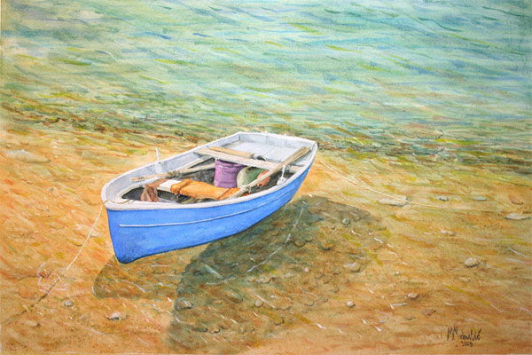
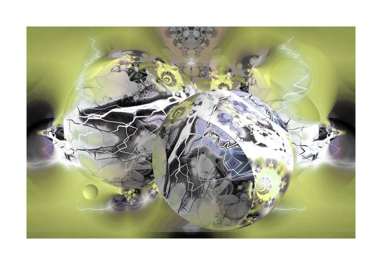
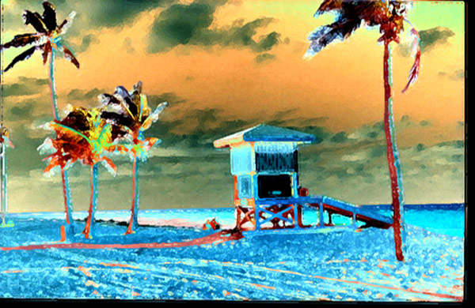
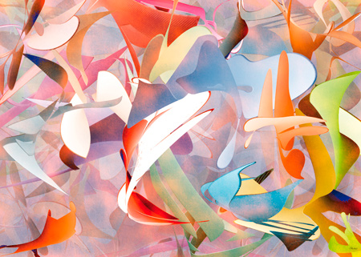
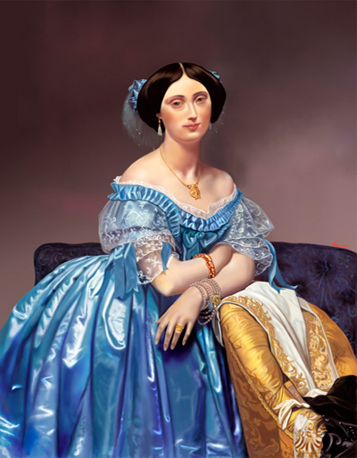

IMAGES OF THE DAY 76
07/21/2023 - 07/31/2023

Painted Art
Open Gallery
In Clear Sea
by Mirsad Mehulic
07/21/2023
Click image to access artist's full exhibit
Open Gallery
Deep Thought
by Joany Cabrera
07/22/2023
Click image to access artist's full exhibit
Guest Gallery
Sun Gods in Exile
by Sam Bahreini
07/23/2023
Click image to access artist's full exhibit
Open Gallery
Circe
by Gianluca Mattia
07/24/2023
Click image to access artist's full exhibit
Guest Gallery 
Connection
by Andrew Hindman
07/25/2023
Click image to access artist's full exhibit
Photo Art 
Open Gallery
Open Gallery
Open Gallery 
Open Gallery
Open Gallery 
Paradise Beach, Malibu
by Ronnie Caplan
07/26/2023
Click image to access artist's full exhibit
Aliens Land
by J D Casten
07/27/2023
Click image to access artist's full exhibit
The Dilemma of Queen Guenevere
by Joe C. K. Lee
07/28/2023
Click image to access artist's full exhibit
My Dog Is Dreaming
by J Velasco
07/29/2023
Click image to access artist's full exhibit
Surreal
An Unexpected Turn of Events
by Robert Edward Kolmel
07/30/2023
Click image to access artist's full exhibit
Ingress
by Vivien Hulbert
07/31/2023
Click image to access artist's full exhibit
BACK TO IMAGES OF THE DAY 75
NEXT